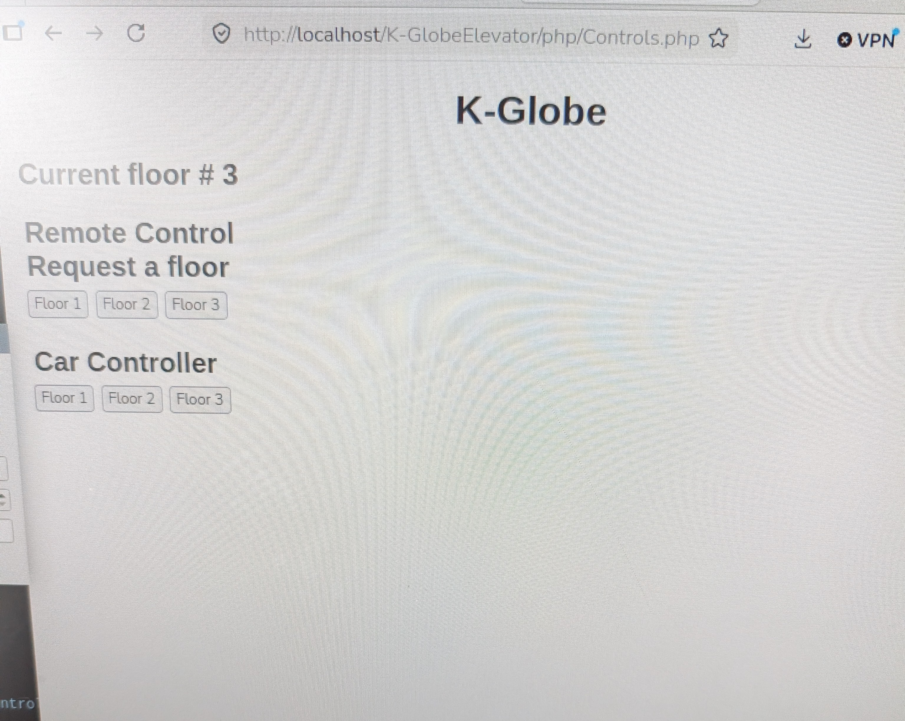

Weekly Log Book 10 - Blake Gergely
Home
About
Prev Pg
Next Pg
- Updated the visuals of the GUI added the multiple inputs (floor request and car request)
- added mutlti threading to the main funtion to read and process CAN messages
- attempted to implement viewing the queue from the GUI
GUI

Current GUI authentication and database are to be implemented next
Copyright © Blake G.